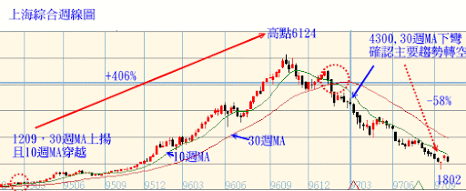
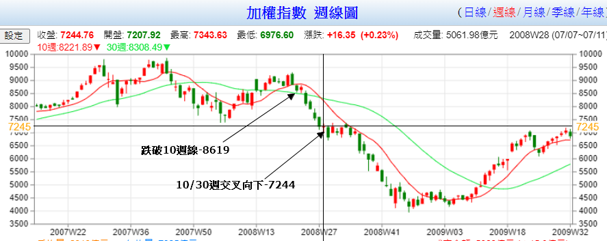
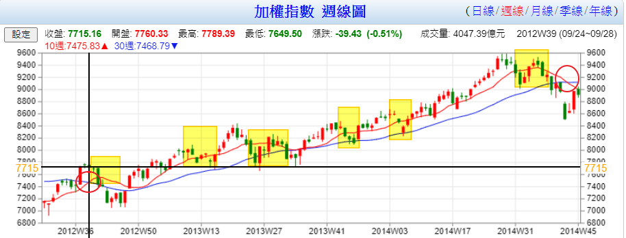
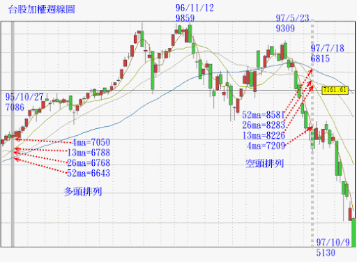
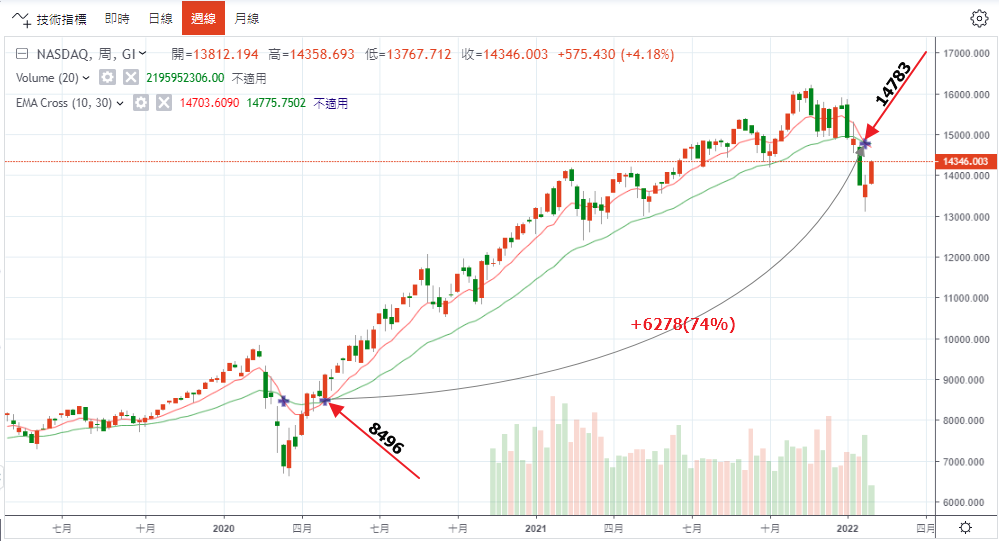
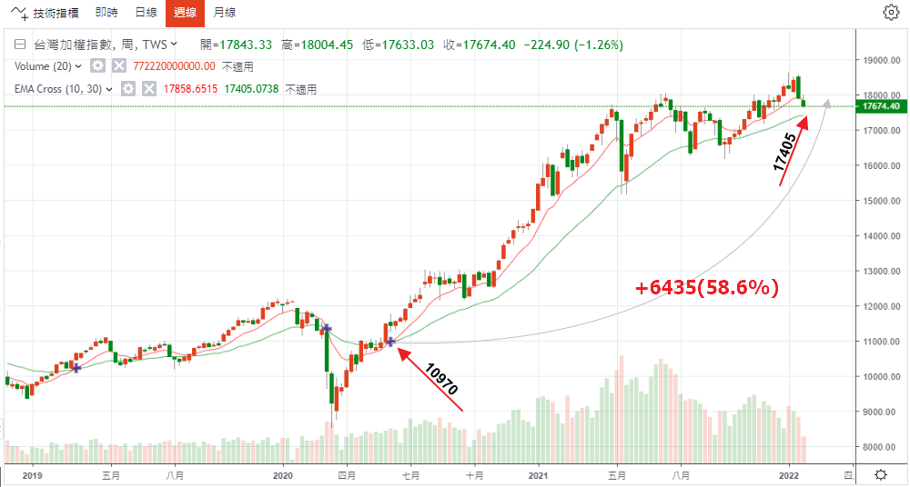
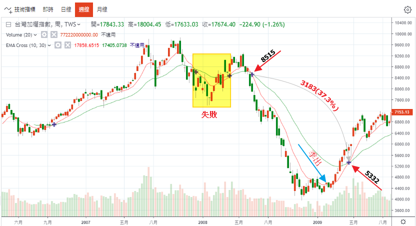

技術指標MA
股票價格趨勢的波動有時非常劇烈，甚至難以掌握。解決這個問題的方法之一，是採用移動平均(moving average)。
移動平均可以緩和股價的波動，將種種的扭曲降至最低，以平滑的曲線代表股價的趨勢。在股價趨勢的技術分析中，移動平均有三種基本類型：簡單移動平均線（Simple Moving Average：SMA）與加權移動平均線（Weighted Moving Average：WMA）以及指數移動平均線（Exponential Moving Average：EMA）。(請參考「3分鐘帶你一次認識3種均線：SMA、EMA、WMA」)
WMA現今少有人用，而相對於SMA來說，EMA走勢更為平滑，反映較為靈敏，能更即時反應出近期股價漲跌的波動與轉折。
移動平均的基本應用
1. 移動平均是一種經過平滑化的趨勢，均線本身便代表支撐與壓力。在上升的行情中，折返的價格走勢可以在移動平均獲得支撐。同理，在下跌的行情中，反彈的走勢會在移動平均遭逢壓力。移動平均遭到觸及的次數愈多(換言之，其所代表的支撐或壓力愈有效)，穿越所代表的意義愈重大。
2. 所選擇的移動平均應該充分反映根本趨勢；所以當它被穿越時，即代表趨勢可能已經發生變動。如果移動平均已經趨於平坦或改變方向，而價格在此時發生穿越的現象，是趨勢反轉的明顯徵兆。
3. 當穿越的現象發生時，如果移動平均仍然順著既有的趨勢發展，僅應該視為趨勢反轉的初步警訊。確認反轉必須等待移動平均趨於平坦或改變方向，或根據其他的技術指標來判斷。
4. 一般來說，移動平均所涵蓋的期間愈長，穿越所代表的意義愈重大。以18個月和30天的移動平均來比較，前者遭到穿越所代表的意義便遠大於後者。
5. 移動平均的方向反轉，這種訊號通常較移動平均的穿越更為可靠。如果方向的改變是發生在市場的轉折點，代表非常明確的訊號。然而，在大多數的情況下，均線的反轉會發生在新趨勢開始之後，所以僅適用於確認。
總之，我們可以把移動平均視為「移動的趨勢線」，如同趨勢線一樣，其重要性取決於長度(涵蓋的期間)、遭到觸及的次數、以及上升或下降的角度。
何謂有效穿越？
我們可以運用過濾的技巧來排除某些錯誤的穿越，所運用的過濾方法取決於時間的長度，以及個人的經驗。舉例來說，我們可以僅接受3%以上的穿越，忽略其他的穿越訊號。在這種情況下，如果我們取40週的移動平均，3%的穿越可能代表一波價格走勢的15%至20%，或許是可以接受的過濾方法。另一方面，如果我們採用10天移動平均，3%的穿越可能代表整個價格走勢，這種過濾方法顯然毫無意義。
某些分析師認為，單一期間的假穿越相當常見，所以在判斷移動平均的穿越訊號時，至少必須等待一個期間以上。以每天的資料來說，移動平均被穿越，應該等待到第二天或第三天才可以進行判定。在判斷有效的穿越時，綜合採用期間與百分率的準則，或許是更合理的方法。
移動平均通常以收盤價為計算的資料。收盤價較其他盤中價格可靠，因為代表投資人願意持有部位過夜的價格，以週線圖來說，是持有部位到隔週。盤中價格經常受到人為的操縱，或受到新聞事件的情緒性扭曲。基於這個理由，我們在判定穿越訊號時，應該以收盤價的穿越為準，如果盤中交易希望採用移動平均的穿越訊號，最適合採用盤中高價或低價的移動平均。
如何選擇計算的期間？
移動平均的長度愈短，對於價格的反應愈敏感－－這可以讓你儘快掌握趨勢的變動。在另一方面，長度愈短，移動平均愈經常改變方向，產生較多的反覆訊號(whipsaws)。移動平均的長度愈長，可以減少反覆的訊號，但訊號的落後程度會加大(不能及時掌握趨勢的轉折)。
移動平均的計算期間，取決於所觀察市場趨勢；換言之，短期、中期或主要趨勢。因為不同的趨勢具有不同的特質，相同的趨勢又會處於不同的循環階段，所以並無所謂「完美的」移動平均。近年來的電腦科技進步快速，許多研究試圖尋找最佳化的移動平均期間。根據各方面的研究資料顯示，不存在一種完美的期間長度。
在某特定期間內，極度適用於某個市場的移動平均，非常不可能也適用於未來。我們在談論期間長度時，賓際上是嘗試尋找一種最適用於某特定時間架構－－ 換言之，短期、中期或長期－－ 的移動平均。一般來說，長期移動平均較不容易受到人為的操縱，或受到消息面的隨機性反應所影饗。所以，長期移動平均的測試結果往往最理想；不論以天或週為單位，40期以上的均線通常比較理想。另外，研究資料也顯示，簡單移動平均的表現，通常優於加權或指數的移動平均。
務必記住，在辨識趨勢的反轉時，我們是運用一整套的技術分析藝術，而移動平均僅是其中的一部份而已。
現在，你要問到底是要用哪一條平均線？沒有答案，只有個人的喜好。
STAN WEINSTEIN(多空操作密笈)：長期投資者使用30週MA；交易員使用10週MA。
Alexander Elder(操作生涯不是夢)：如果希望掌握主要的長期趨勢，可以考慮200天的均線。大多數交易者都是採用 10天到20天之間的EMA。移動平均的長度不應該短於8天，否則會破壞它身為順勢指標的功能。就我個人而言，過去幾年來大多採用 13天的EMA。
MARTIN PRING(技術分析精論)：30週MA與10週MA，如下節「兩條以上的平均線」。
杜金龍：10日線與30日線交叉效果最好。年線則為多空分界，破年線最好立刻退場觀望。
Mark Minervini(超級績效--金融怪傑交易之道)：50ma, 150ma, 200ma(如下節)
在台灣，一般是做如下分類：(摘自廖繼宏：我的技術線形會轉彎)
移動平均線依時間長短，可分為短期、中期及長期移動平均線。實務上，短期為10日以下的移動平均線，中期則是介於20日的月線至60日的季線移動平均線，長期則是半年線以上的移動平均線。
(1)短期移動平均線
◆3日線：起伏大，易扭曲，難尋軌跡。
◆5日線：可與週線相互印證，強勢股拉回的第一買點。
◆10日線：確實反應短期股價平均成本，為短期回整的重要支 撐，為指數整理的第一買點。
(2)中期移動平均線
◆20日線：即月線，普遍使用，個人在實務操作上判斷中期走勢時最常使用的均線。
◆60日線：即季線，樣本大小適中，波動幅度平滑，有軌跡可尋，轉折點明顯有效。我們通常以季來觀察景氣變化，上市櫃公司公布季報對股價影響大。
(3)長期移動平均線
◆120日：半年線。
◆240日：年線，其軌道更為平滑，偏差度相對降低，為多空市場分界點。年線上揚，股價在年線之上為多頭市場；年線反轉向下，股價在年線之下為空頭市場。
在週線上，則看4週均線(20日線)、13週均線(60日線)、26週均線(120日線)、52週均線(240日線)，更長期的均線為104週線均線(兩年線)、260週均線(五年線)。月線上則看12月均線(年線)、24月均線(兩年線)、60月均線(五年線)、120月均線(十年線)。
超級績效使用的平均線
第二階段趨勢樣板
1.當時股價高於一百五十天(三十週)與兩百天(四十週)移動平均。
2.一百五十天移動平均高於兩百天移動平均。
3.兩百天移動平均至少有一個月期間處於上升狀態(多數情況最好有四、五個月以上)。
4.五十天移動平均同時高於一百五十天與兩百天移動平均。
5.當時股價高於五十天移動平均。
6.當時股價較五十二週低點至少高出30%(很多最佳候選股在突破橫向整理而展開大規模漲勢之前，股價已經較五十二週低點高出100%-300%或更多。)
7.目前股價距離五十二週高點不超過25%(愈接近愈好)。
8.相對強度評等(relative strength ranking)，根據《投資人日報》不低於70，最好是80多或90多，而且較佳候選股總是如此。
以上1~5點可以簡化成：股價>50ma>150ma>上揚一個月以上200ma
兩條以上的平均線
某些趨勢的判斷技巧，是採用一條以上的移動平均。訊號是發生在短期均線穿越長期均線的時候。這種方法的優點是其價格資料經過兩次平滑，不僅可以降低錯誤訊號的發生次數，而且時間落後也相對短暫。就股票市場的長期趨勢來說，10週與30週移動平均線非常適用這種方法。
當10週均線由上往下穿越30週均線，且30週均線處於下降狀態時，代表主要趨勢向下的訊號。同理，10週均線由下往上穿越30週均線，而30週均線是處於上升狀態時，代表主要趨勢向上的訊號。如果10週均線向上穿越下降中的30週均線，或10週均線向下貫穿上升中的30週均線，都不代表有效的訊號。
根據定義，移動平均相互穿越的有效訊號，是發生在價格峰位與谷底之後，所以僅可以用來確認趨勢的變化，不代表價格的實際轉折點。
在運用上，移動平均往往都必須配合其他技術指標。這是因為價格偶爾會呈現長期的橫向走勢，在這種情況下，移動平均會持績產生錯誤的穿越訊號。走勢圖8．6(略)顯示美國股票市場在1946~1949年期間的空頭行情，出現許多錯誤的穿越訊號。一般來說，在這類令人沮喪的橫向走勢之後，通常會出現一波趨勢明顯的走勢，後者的獲利潛能遠超過先前震盪走勢所造成的損失。
下圖上海綜合股市如果使用此法，可以抓到主要趨勢。但該法似乎在高點6124一直到4300才獲得主要趨勢反轉的確認，有沒有辦法改善呢？跌破趨勢線與M頭出現先行出脫一部分應該是一個好方法，此部分是STAN所建議的方法。
[001_均線與型態]

多元系統的必要性
以上10週與30週均線似乎似乎可以很完美抓到主要趨勢，但如下圖，長均線的出場點慢了1千375點。
[004_長均線出場太慢]

如下圖，使用長均線10/30週交叉法一波到底的行情如使用短均線10週則會進出7次。
[005_短均線頻繁進出]

凡‧沙普在「交易創造自己的聖盃」中說道：「...同時採用不相關的交易系統(每種系統各自採用其適當的部位大小模型)，通常也有助於提昇績效，舉例來說，我們採用一套長期順勢系統，如果再配合運用一套適用於橫向走勢的短期系統，整體績效應該會改善，因為短期系統可以在橫向走勢內賺錢，藉以彌補長期順式系統在這種市況下通常會發生的損失，說不定還有賺錢的機會。...」
簡言之，你無法預測目前市場適合哪一種均線，同時採用長、短兩種均線系統可能是必要的。
(請參考「為何需要多元系統」)
何謂多頭排列與空頭排列？
如下圖，當兩條均線均為上揚，短期均線向上穿越長期均線為之黃金交叉。反之，當兩條均線均為下彎，短期均線向下穿越長期均線為之死亡交叉。當短中長期均線皆呈現黃金交叉時或死亡交叉時，代表一個大趨勢已展開。由下圖可看出當呈線這種排列，至少都還有2000點以上的大行情。
其缺點在於為落後指標，當出線這種排列時，通常行情已經走了一大段(但仍然還有一大段)，可作為趨勢的確認，而且在該排列沒有被破壞之前，不應該反向操作(如等到月線與季線重新改變方向交叉)。
[002_多空排列]

葛蘭碧八大法則
本法則於「乖離率」一章中說明。
Victor使用的平均線
以下摘自「專業投機原理」/ Victor Sperandeo
「 個人而言，我認為股票市場(個股與指數)最理想的移動平均線，是200天期(200個交易日，相當於40週)的移動平均線。
我1968年開始採用這項指標，當時我閱讀William Gordon的一份研究報告，他將200天期移動平均的買賣準則運用於1917年至1967年的「道瓊工業指數」，每年的平均報酬率為18.5%。同時，他的研究報告顯示，投資者若在「道氏理論」對於多頭與空頭行情的確認日買賣股票，每年的平均報酬率為18.1%。在這份研究報告中，Gordon以兩個簡單的法則決定移動平均的買進與賣出訊號：
200日線
1.如果200天移動平均線由先前的下降趨勢，開始轉為平坦或上升，而且價格由下往上穿越均線，代表主要的買進訊號。
2.如果200天移動平均線由先前的上升趨勢，開始轉為平坦或下降，而且價格由上往下穿越均線，代表主要的賣出訊號。
你不僅可以利用長期移動平均線預測市場指數，也可以將它運用於個股與商品中。對我個人來說，移動平均有兩項主要的功能－－ 確認「道氏理論」以判斷長期趨勢，以及篩選個別股票。
選擇個別股票時，如果價格低於移動平均，我絕對不曾買進；如果價格高於移動平均，我絕對不曾賣出。你只要拿起任何的圖譜，並採用35週或40週的移動平均線，則你便瞭解我為何這麼做－－ 勝算的問題。
10週與30週線交叉
就較短期的移動平均線來說，我僅發現另一組均線，具有一致性的功效，並禁得起時間的考驗。它不僅適用於個股與股票指數，也適用於其他許多商品。
1.當10週移動平均線穿越30週移動平均線，而兩者的斜率都向上，並且價格又同時位於兩條均線的上方，這代表買進訊號。
2.當10週移動平均線穿越30週移動平均線，而兩者的斜率都向下，並且價格又同時位於兩條均線的下方，這代表賣出訊號。
當然，猶如所有的技術指標一樣，這些指標也絕對無法100%約有效。以I989年10月19日的情況來說，如果你僅採用10週/30週均線穿越法則，你勢必陷入崩跌的走勢中。當你的指標發出賣出訊號時，崩盤早就結束了。
10/30週均線交叉實例
[0009_多元_NASDAQ]

[0012_多元_南韓]
[0013_多元_台灣]

[0015_2008金融大海嘯_放空]

滾動式最佳化的必要
在商品期貨市場中，並沒有明確的法則判斷什麼期間的移動平均最理想：不同的市場與不同的時間，都需要採用不同期間的均線。例如，作者撰寫本文時，200天的期間適用於債券、美元指數與黃金，其他商品則不太適用。
基本上，你必須體認一項事實，就如任何技術分析工具一樣，移動平均的效能也會隨市場情況的不同而改變。你的時間架構愈短，情況愈是如此。所以，你必須測試不同期間的均線，並尋找一個最理想的期間。當它們不再有效時，你便必須調整。以豬腩來說，我一向採用4週與11週的均線，並以類似10週/30週均線穿越的法則交易。然而，最近，這組均線的訊號開始顯得遲鈍，我可能需要再測試其他的期間了。
運用移動平均線時－－或任何其他技術分析工具－－ 最嚴重的錯誤便是對它產生一種執著的態度。換言之，你絕對不可以認為自己已經發現「終結所有法則的一項法則」;這世界上沒有這種玩意見。每一個市場都是處在不斷變化的程序中，任何方法若未考慮這項事實，它已經觸犯最根本的錯誤。
在哲學上，我非常不認同「實用主義」(Pragmatism)，但就交易法則而言，我的態度卻相當務實。當它不再有效時，你便應該拋棄它。否則，就如同人與人之間的關係一樣，它會讓你大失所望。我便目睹許多這類情況，這些人都曾經是「華爾街」最頂尖的交易員。所以，不論你發現任何的技術性方法或指標，萬萬不可讓自己的感情涉入其中。」
參考書籍
■ 技術分析精論 / MARTIN PRING
■ 多空操作秘笈 / STAN WEINSTEIN
■ 包寧傑帶狀操作法 / Bollinger
■ 操作生涯不是夢 / Alexander Elder
■ 我的技術線形會轉彎 / 廖繼宏
■ 技術指標在台灣市場的應用 / 杜金龍
■ 專業投機原理 / Victor Sperandeo
■ 超級績效－－金融怪傑交易之道 / Mark Minervini